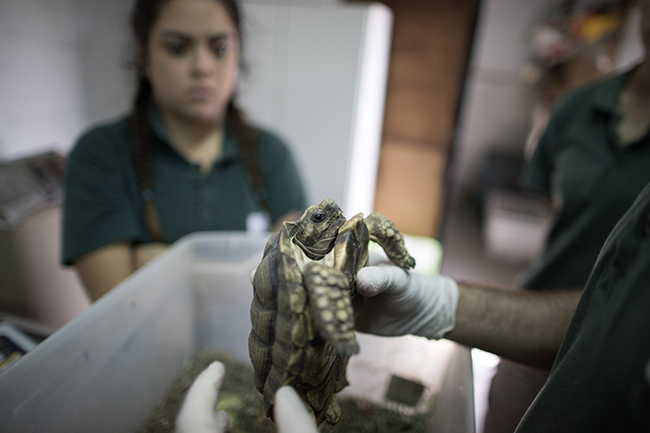
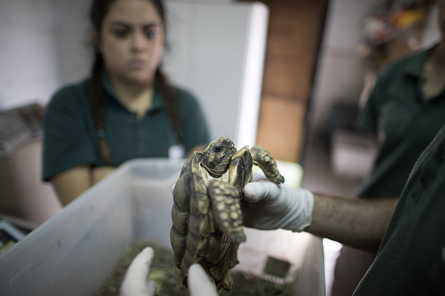

¿Qué es el Ecoparque?
El Ecoparque es un un portal a la biodiversidad argentina donde se propone al visitante comprender la importancia de la conservación de nuestras especies y conocer los programas de conservación que se desarrollan en el parque.
El Ecoparque propone revalorizar el patrimonio cultural y natural aprendiendo de manera interactiva y en contacto con la naturaleza.
Es un centro para la conservación de especies autóctonas en peligro de extinción que colabora activamente con la recuperación y el enriquecimiento de la biodiversidad Argentina, abriendo sus puertas al visitante para promover la educación ambiental.
Trabajamos para mitigar los efectos de la crisis ambiental y recuperar la salud de nuestros ecosistemas con el objetivo de construir un mejor futuro para nosotros y las próximas generaciones. Nuestro propósito es contribuir a un vínculo más respetuoso del hombre con la naturaleza.
Visitanos
El Ecoparque es un paseo donde se propone al visitante comprender la importancia de nuestras especies autóctonas y conocer los programas de conservación que se desarrollan en el parque.
Descubrí todas las actividades que podés hacer en el Ecoparque
- Visitas Especiales
Conocé a fondo el trabajo que hacemos en el Ecoparque para salvar las especies en peligro.
- El camino de Kuky y Pupy
- Cuidado animal
- Botánica
- Patrimonio histórico
- Hospital de Fauna Silvestre
- Visitas escolares
- Exploratorio Del Río de la Plata.
- Plaza de agua.
- Animatrónicos
Operá vos mismo los animales marino robóticos.
- Ecoevolución -
Experiencia 4D.
Acercáte al tanque de agua y viajá por las tuberías del ciudad.
- CHE
Un museo interactivo sobre la transformación del Ecoparque y la biodiversidad Argentina. Mapping, aplicaciones touch, videos, juegos.
- Estación Oceánica
- Museo del Mar
- Odisea Submarina.
- Realidad virtual
- Postas interactivas.
Jugá en las 16 postas del parque y aprendé sobre la biodiversidad y el ambiente.
- Arroyos de Buenos Aires
Experiencia inmersiva.
- Paseo de flora.
Vivero, plantas nativas, acuáticas, compost y cartelería interactiva.
Conocé todo sobre nuestras plantas nativas y como cuidarlas.
- Domo de energías renovables.
¿Cómo es una casa con energías renovables? Miércoles a domingos: 11:30, 14:30 y 15.30 hs.
- Senderos inmersivos de flora.
Salí del camino y entra en el mundo natural.
- Carrousel.
- Desayuno, almuerzo y merienda en los locales gastronómicos.
- Observación de mamíferos autóctonos.
- Observación de aves.
- Observación de plantas nativas, mariposas e insectos.
Conservación
Nuestra biodiversidad ha disminuido drásticamente debido a diversas actividades realizadas por los humanos que resultan en una variedad de crecientes amenazas. Estas atentan contra la conservación de las especies al provocar la alteración, la fragmentación y la degradación de sus hábitats.
Las actividades que mayor impacto tienen sobre los ecosistemas son:
1. El avance de la frontera agropecuaria.
2. Actividades extractivas para la obtención de recursos naturales como minerales y combustibles fósiles.
3. Explotación directa e indirecta de seres vivos: sobrepesca, actividad forestal, caza y tráfico ilegal.
4. Urbanización y desarrollo industrial y su consecuente contaminación de recursos.
5. La introducción de especies exóticas invasoras.
La biodiversidad y el accionar para conservarla
Imponer un freno a una tendencia destructiva de semejante magnitud puede parecer complejo, pero los actores relevantes tenemos la obligación de responder con acciones concretas y eficientes que se enfoquen en estas problemáticas, tanto en su raíz como en sus síntomas. Desde el Ecoparque trabajamos a diario en la ejecución de acciones en favor de la conservación de la vida silvestre, llevando adelante diversos Programas de Conservación. 

Patrimonio
Del Jardín Zoológico al Ecoparque: la historia de una transformación.
El Ecoparque ocupa el predio del ex Jardín Zoológico de Buenos Aires, declarado Monumento Histórico Nacional. El predio contiene 42 edificios históricos, 27 obras de arte (esculturas y monumentos) y obras decorativas (fuentes, mástiles, ruinas bizantinas). Además de 9 puentes y 3 lagos: Azara, Darwin y Burmeister.
En el año 2017 arrancaron las obras de recuperación patrimonial bajo el compromiso de la puesta en valor de todo el predio, la creación de contenidos y nuevos usos para edificios históricos y garantizar la recuperación de espacios verdes y las elipses originales.
El proyecto actualiza, renueva y refuncionaliza las instalaciones y servicios, respetando su valor histórico y patrimonial, partiendo de los conceptos establecidos en la Ley Ecoparque 5752. El plan a corto, mediano y largo plazo es un parque cuyo patrimonio cultural y arquitectónico esté debidamente conservado, potenciando con ello la calidad del paseo y haciendo del predio un lugar único y atractivo por su historia.

Educación ambiental
Desarrollo sostenible, generando conciencia y cambios conductuales que nos lleven hacia una convivencia armónica entre el desarrollo social, el crecimiento económico, el cuidado del ambiente y la conservación de la biodiversidad.
Además te dejamos recursos educativos para que alumnos y alumnas, maestros y maestras puedan conocer más sobre la conservación de la fauna y flora autóctona de la Argentina, la promoción de proyectos de conservación de fauna y la investigación científica.


GALERIA


Dejanos tu consulta